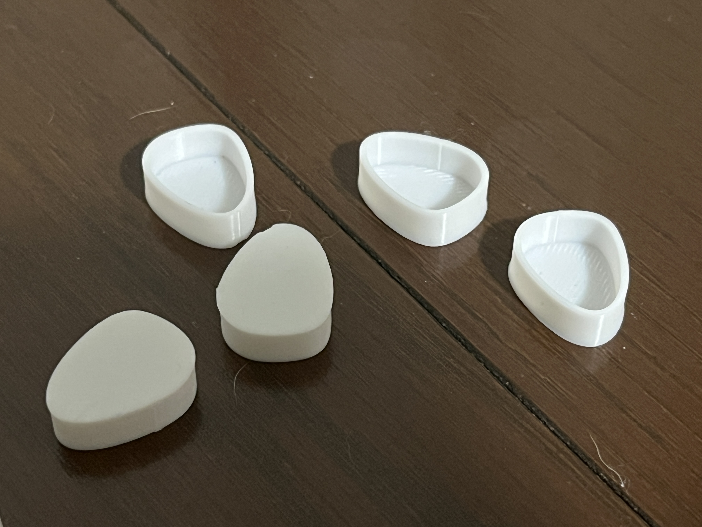

<html lang="jp"></html>
<head>
    <title>🎀✨Design for Others✨🎀</title>
    <link rel="stylesheet" href="./css/style.css">
</head>
<body>
    <h1 style="text-align: center;">🎀✨Design for Others✨🎀</h1>
    <br>
    <br>
    <style>
        div{text-align: center;}
    </style>
 <div>
    <h2 style="text-align: center;">使い切り→使いまわせる　容器</h2>
    <br>

 </div>
    <h4>🎀Point of view🎀</h4>
    私たちの班は次の2人について着眼してみました。<br>
    <ul>
        <li>1人目　「オリジン弁当で30円のソースだけを買って帰ったおじいちゃん」</li>
        <li>2人目　「リュックの紐の長さが違っている人」</li>
    </ul>
    <br>
    <div>
        班で意見を出し合い、この2人についてそれぞれPOVをまとめました<br>
        ↓ ↓ ↓ ↓ ↓<br>
    </div>
    
    
    <br>
    <br>
    私はこの２つのうち、①を選びました
    <br>
    <br>
    <br>
    <h4>🎀完成した作品🎀</h4>
    
    
    
    <br>
    <br>
    <br>
    <h4>🎀説明🎀</h4>
    おじいちゃんは使い切れるソースが欲しかったのだろうと推測をしたので、使い切りにちょうどいい量が入るMY容器を作ろうと思い、製作しました。<br>
    使いまわせる容器は使い切りパッケージとは違い、捨てることなく次回も使えるところがメリットとしてあります。<br>
    また、使い切りの調味料は使いきれない時や、逆に足りないというデメリットもあると思っています。<br>
    なのでお店側でポンプ式で自分の欲しい量だけ買えるシステムを導入し、このMY容器を持っていけばゴミもなくなり、廃棄にならず、ECOにもなります👌✨<br>
    <br>
    実際に作ってみた感想は色が質素なので色をつければ良かったと思いました。<br>
    また、蓋の部分の大きさを間違えてしまい、はめれない･･･という肝心なミスをしてしまったことが悔いとしてあります<br>
    <br>
    また、容器を三角にしたので持ちやすくかけやすいというメリットもあります‼️<br>
    さらに色んな調味料を入れて保管するとき（例えば３つや５つ）に下のようにお花に形になって見た目も可愛くなると思い、複製しr¥てみたところもポイントとしてあります☘️<br>
    蓋の部分に彫刻デザインも入れたらさらに可愛くなるし、パッと見でなんのデザインをモチーフにしたのかが伝わるのかな、と思いました<br>
    
    <br>
    <br>
    <br>
    <br>
    <h4>🎀実例🎀</h4>
    
    
    <br>
    <br>
    家にソースがなかったので醤油で代用してみました<br>
    <br>
    <br>
    <br>
    <h4>🎀使用機材🎀</h4>
    ３Dプリンター<br>
    <br>
    <br>
    <br>
    <h4>🎀メンバーのリンク🎀</h4>
    <a href="https://mirina-149.github.io/xbp/digi_fab/Design%20for%20Others.html">みり</a>
    <a href="https://reishun.github.io/xbp/digi_fab/design03.html">Sato</a>
    <a href="https://mold647.github.io/xbp/digi_fab/katanuki.html">mold</a>
    <a href="https://sites.google.com/view/kiasan/design-for-others">kia</a>
    <a href="https://sites.google.com/view/desifabdnssk/design-for-others">Dan</a><br>
    <br>
    <br>
    <br>
    <h4>🎀製作データ🎀</h4>
    <a href="../digi_fab/files/1.stl">CURAデータ（容器）</a>
    <a href="./files/2.stl">CURAデータ（ふた）</a>
    <a href="./files/調味料容器.stl">FUSIONデータ</a><br>
    容器とふたは複製したかったのと、同じ大きさでそれぞれ３Dプリントすることで効率化を図れるので分けてCURAデータ化させました


